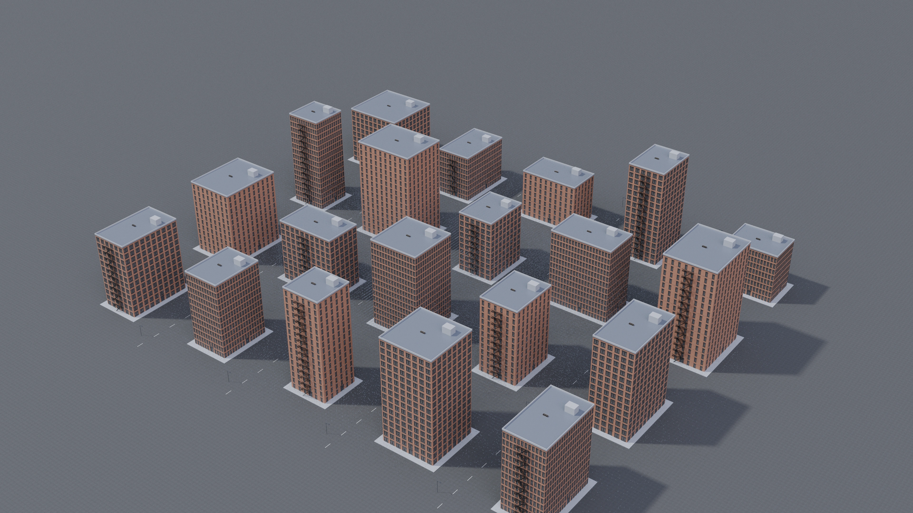
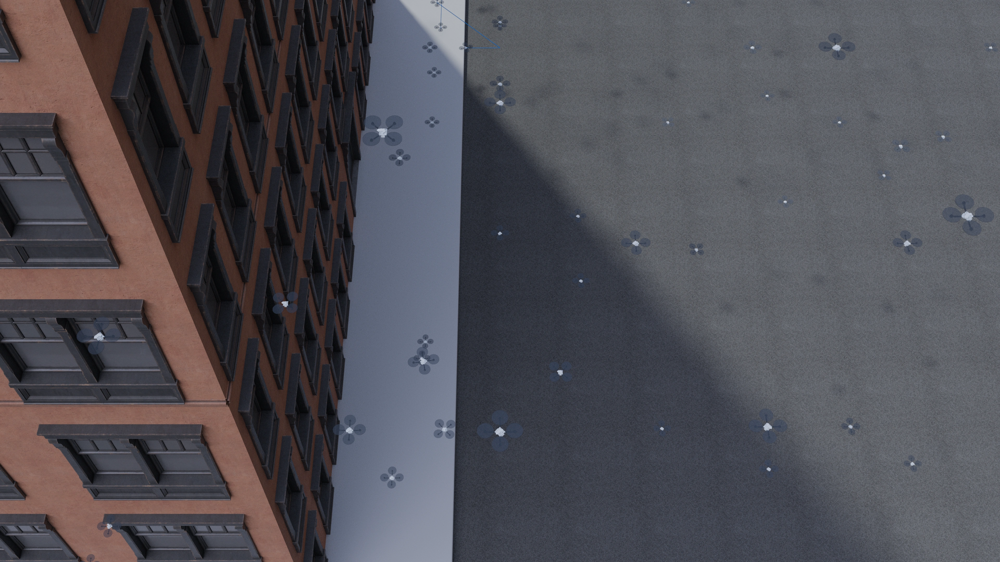
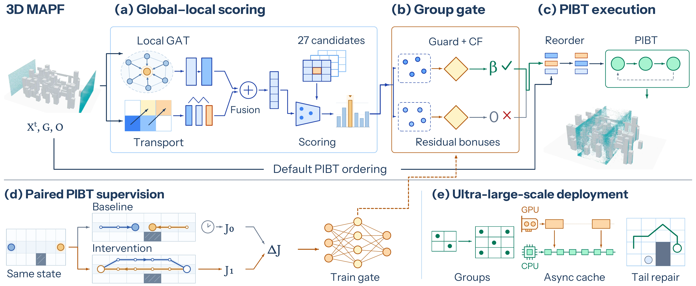

{kind=link}
{kind=link}
Global-local candidate scoring
Local graph attention and global source-goal transport jointly score 27 native action candidates.
Global context. Guarded execution.
Executor-aligned residual coordination with counterfactual gating for ultra-large-scale 3D MAPF.
Watch the scenesRecorded motion / 100,000 agents
Recorded 100,000-agent spatial paths with additional within-step timing adjustments, not unmodified solver execution. These excerpts cover original steps 4-28, before the first neural-ranking update. All identities and original waits are retained; blue tails show past motion. They do not establish neural-module benefit, full-goal completion, or physical flight safety. Source audit
Scale extension / Full recorded execution
A fresh recording of the archived million-agent deployment, separate from the paper's timing results. Each video frame uses one original solver state. No agent-position interpolation, extra execution schedule, or removal of agent identities. Agents use point markers at this overview scale. Original obstacle geometry and proportions are retained.
Time-compressed discrete replay, not real-time flight. All recorded states pass vertex, edge-swap, obstacle-cell, boundary and unit-step checks. These checks do not establish continuous-body clearance or physical flight safety.
New / Mesh-matched showcases
Real environment meshes.
Recorded, collision-audited motion.
New showcase configurations, not paper benchmark results. Both use exact 3D distance fields and an added hold-only execution schedule; spatial paths are unchanged. All 64 agents reach their goals. Linear segments are audited with 0.16 m body envelopes. These are kinematic replays, not flight-dynamics simulations. The learned provider ran, but its gate made no candidate-order overrides in these cases; no learned-performance gain is claimed.
New / 100,000-agent city

100,000 bodies; scene overview.

Recorded positions and selected past paths.
Two views of the same recorded 100,000-agent state: 71,162 agents move in this phase and 23,301 are at goal. Blender mesh-matched showcase, not a paper benchmark. Paths, identities and obstacles are retained; extra waits provide audited center clearance. Blue lines show selected past paths. No generated trajectories or flight-dynamics guarantee.
01 / Recorded environments

100,000 recorded agent positions per frame. Teal includes both moving and arrived agents. The vertical display scale is exaggerated 5× relative to the horizontal scale. This is a 30 s time-compressed replay, not real-time flight.
02 / Method
Neural candidate ordering.
Conflict resolution by PIBT.

Local graph attention and global source-goal transport jointly score 27 native action candidates.
Paired PIBT rollouts with shared initial states and priorities train an execution-conditioned gate to filter candidate reorderings.
PIBT retains claims, priority inheritance, backtracking and conflict checks. Population-adaptive grouping, cached inference and selective tail repair support large deployments.
03 / Submitted paper
Results below reproduce the submitted paper. They are not measurements of the Blender showcase videos.
Two attempts per setting. Time is the mean across attempts; SOC is averaged over complete, audited solutions only. Missing entries remain missing as printed in the paper. Different cost denominators prevent an unconditional ranking by cost alone.
| Agents | Method | E2E time (s) | Mean SOC |
|---|---|---|---|
| 100 | GuardPIBT | 6.24 | 18.93 |
| 100 | LaCAM | 0.02 | 24.58 |
| 100 | PyPIBT | 0.28 | 24.36 |
| 100 | LaGAT | 8.12 | 20.78 |
| 1,000 | GuardPIBT | 14.31 | 63.68 |
| 1,000 | LaCAM | 0.49 | 91.96 |
| 1,000 | PyPIBT | — | — |
| 1,000 | LaGAT | 10.75 | 72.74 |
| 10,000 | GuardPIBT | 172.41 | 241.33 |
| 10,000 | LaCAM | — | — |
| 10,000 | PyPIBT | — | — |
| 10,000 | LaGAT | 386.4 | 249.77 |
| Agents | Method | E2E time (s) | Mean SOC |
|---|---|---|---|
| 100 | GuardPIBT | 6.24 | 26.82 |
| 100 | LaCAM | 0.02 | 36.98 |
| 100 | PyPIBT | 0.28 | 35.44 |
| 100 | LaGAT | 8.05 | 28.39 |
| 1,000 | GuardPIBT | 16.36 | 275.61 |
| 1,000 | LaCAM | 0.57 | 289.9 |
| 1,000 | PyPIBT | 178.17 | 374.69 |
| 1,000 | LaGAT | 54.21 | 224.24 |
| 10,000 | GuardPIBT | 113.53 | 2,051.33 |
| 10,000 | LaCAM | 174.89 | 2,910.9 |
| 10,000 | PyPIBT | — | — |
| 10,000 | LaGAT | — | — |
| Agents | Method | E2E time (s) | Mean SOC |
|---|---|---|---|
| 100 | GuardPIBT | 6.61 | 22.06 |
| 100 | LaCAM | 0.02 | 28.47 |
| 100 | PyPIBT | 0.29 | 29.18 |
| 100 | LaGAT | 8.04 | 23.75 |
| 1,000 | GuardPIBT | 8.96 | 70.72 |
| 1,000 | LaCAM | 0.38 | 99.58 |
| 1,000 | PyPIBT | 12.378 | 99.67 |
| 1,000 | LaGAT | 10.269 | 77.38 |
| 10,000 | GuardPIBT | 168.936 | 315.67 |
| 10,000 | LaCAM | 39.64 | 394.87 |
| 10,000 | PyPIBT | 888.188 | 394.93 |
| 10,000 | LaGAT | 257.24 | 288.04 |
| Scene | Domain | Agents | E2E time (s) | Mean SOC |
|---|---|---|---|---|
| Forest | 2D | 100,000 | 1,104.83 | 2,573.77 |
| Maze | 2D | 100,000 | 5,208.15 | 16,558.92 |
| Warehouse | 2D | 100,000 | 1,163.11 | 2,228.62 |
| Gate Walls | 3D | 100,000 | 194.61 | 659.31 |
| Warehouse | 3D | 100,000 | 908.61 | 1,041.83 |
| Variant | E2E time (s) | Mean SOC | Mean waiting steps |
|---|---|---|---|
| GuardPIBT | 256.1 | 3,739.17 | 2,192.83 |
| W/o global flow | 251.45 | 4,089.5 | 2,521.93 |
| W/o CF gate | 250.34 | 3,772.39 | 2,205.99 |
10,000-agent 3D warehouse. All variants complete all 10 evaluated runs. The no-global-flow variant uses the legacy deployment setting, so this row is not a strictly isolated single-variable causal comparison. Waiting is mean steps per agent, not a percentage.
Trade-offs remain: at 10,000 agents in Warehouse, LaCAM has lower runtime and LaGAT has lower SOC than GuardPIBT. No across-the-board dominance is claimed.
03 / Evidence
The archived benchmark renders preserve recorded solver coordinates and obstacle geometry. Their lighting and surface changes do not change the reported experiments.
The archived 100k replay is sampled without interpolation. Its discrete vertex, edge-swap and obstacle checks do not establish continuous-body clearance. The separate 64-agent showcases use certified linear interpolation and additional execution scheduling.
Snapshots, archived replays and new showcases are identified separately. No generative image synthesis is used. None of these renders demonstrates real-world flight safety.